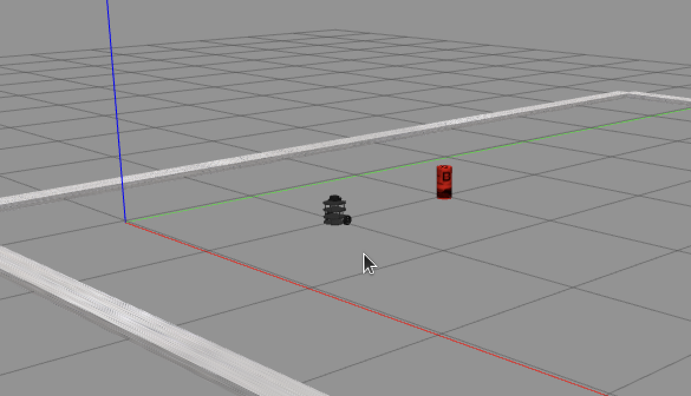
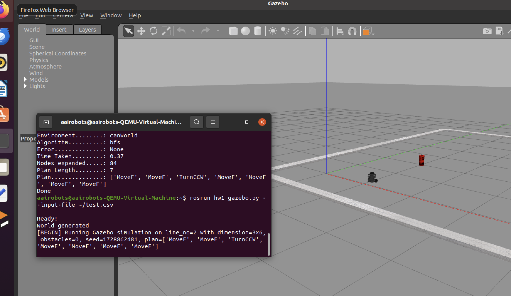

Search Algorithms in Gazebo


Project Goal
Search project focuses on developing and testing search algorithms for a TurtleBot3 robot within two distinct environments, Can World and Cafe World. These environments are dynamic and feature obstacles that must be navigated to reach a specified goal. The task involves modifying the provided code framework and implementing search algorithms, such as Breadth-First Search (BFS), Uniform Cost Search (UCS), Greedy Best First Search (GBFS), and A* Search. The TurtleBot's movement and state transitions are represented in a grid-based format, with costs associated with movement and turning actions. The project requires utilizing the ROS framework, running Gazebo simulations, and debugging the implementation. Given the real-time nature of the simulations, understanding the robot's navigation in these environments is crucial to ensuring correct and optimal solutions. This project also includes evaluating performance metrics such as time taken, nodes expanded, and plan length for different search strategies.
Project Background
The goal of this project is to implement and evaluate various search algorithms to navigate TurtleBot3 in obstacle-rich environments. By the end of the project, the implemented search algorithms should be able to: Successfully plan paths for the TurtleBot to reach its goal while avoiding obstacles. Optimize the cost of actions, ensuring efficient path planning and execution. Compare the performance of different algorithms in terms of computational efficiency and solution quality. Test and verify the implementation using Gazebo simulations, ensuring that the TurtleBot can physically execute the planned paths within both environments.